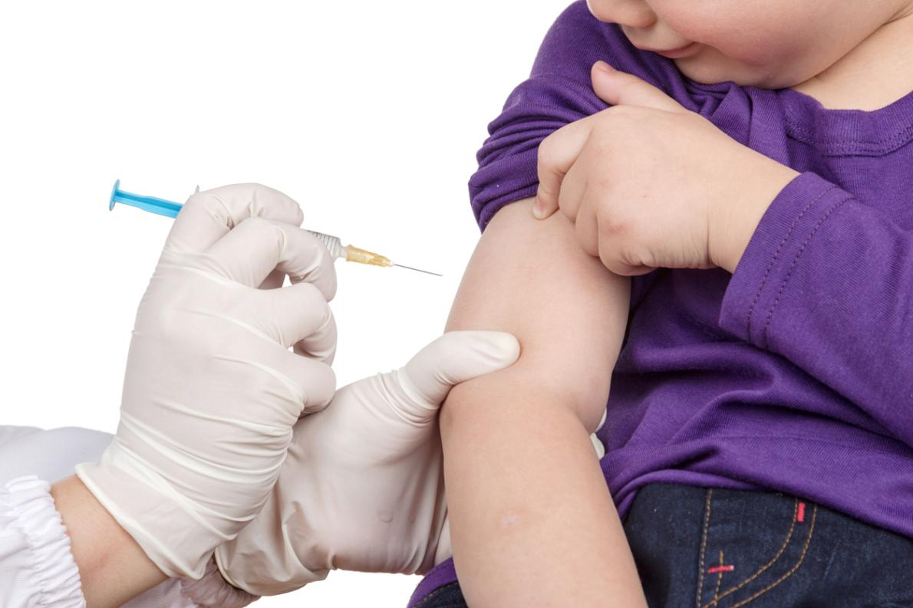

Existen dos vacunas principales:
- DTaP:Aplicada en bebés y niños menores de 7 años. Protege contra difteria, tétanos y tosferina. Esquema común: 2, 4, 6, 15-18 meses y refuerzo a los 4-6 años.
- Tdap:Refuerzo en adolescentes (11-12 años) y adultos. Recomendado para embarazadas en cada embarazo (semana 27-36) para proteger al recién nacido.
